제강기능사 (2014-01-26 기출문제)
1과목: 임의 구분
1. Fe-C 평형상태도에서 자기 변태만으로 짝지어진 것은?
- A0변태, A1 변태
- A1변태, A2 변태
- A0변태, A2 변태
- A3변태, A4 변태
(정답률: 81%)

2. 주철에서 어떤 물체에 진동을 주면 진동에너지가 그 물체에 흡수되어 점차 약화되면서 정지하게 되는 것과 같이 물체가 진동을 흡수하는 능력은?
- 감쇠능
- 유동성
- 연신능
- 용해능
(정답률: 86%)
3. 탄소강 중에 포함된 구리(Cu)의 영향으로 옳은 것은?
- 내식성을 저하시킨다.
- Ar1의 변태점을 저하시킨다.
- 탄성한도를 감소시킨다.
- 강도, 경도를 감소시킨다.
(정답률: 74%)
4. 다음 중 형상 기억 합금으로 가장 대표적인 것은?
- Fe-Ni
- Ni-Ti
- Cr-Mo
- Fe-Co
(정답률: 60%)
5. 다음 합금 중에서 알루미늄 합금에 해당되지 않는 것은?
- Y합금
- 콘스탄탄
- 라우탈
- 실루민
(정답률: 64%)
6. 보통 주철(회주철) 성분에 0.7~1.5% Mo, 0.5~4.0% Ni을 첨가하고 별도로 Cu, Cr을 소량 첨가한 것으로 강인하고 내마멸성이 우수하여 크랭크축, 캠축, 실린더 등의 재료로 쓰이는 것은?
- 듀리론
- 니-레지스트
- 애시큘러 주철
- 미하나이트 주철
(정답률: 61%)
7. 주철의 물리적 성질을 설명한 것 중 틀린 것은?
- 비중은 C, Si 등이 많을수록 커진다.
- 흑연편이 클수록 자기 감응도가 나빠진다.
- C, Si 등이 많을수록 용융점이 낮아진다.
- 화합 탄소를 적게 하고 유리 탄소를 균일하게 분포시키면 투자율이 좋아진다.
(정답률: 46%)
8. 비중 7.14, 용융점 약 419℃ 이며 다이캐스팅용으로 많이 이용되는 조밀육방격자 금속은?
- Cr
- Cu
- Zn
- Pb
(정답률: 50%)
9. 분말상 Cu에 약 10% Sn 분말에 2% 흑연 분말을 혼합하고, 윤활제 또는 휘발성 물질을 가한 후 가압 성형 소결한 베어링 합금은?
- 켈밋 메탈
- 배빗 메탈
- 앤티프릭션
- 오일리스 베어링
(정답률: 79%)
10. 다음 중 슬립(slip)에 대한 설명으로 틀린 것은?
- 슬립이 계속 진행하면 변형이 어려워진다.
- 원자밀도가 최대인 방향으로 슬립이 잘 일어난다.
- 원자밀도가 가장 큰 격자면에서 슬립이 잘 일어난다.
- 슬립에 의한 변형은 쌍정에 의한 변형보다 매우 작다.
(정답률: 66%)
11. 다음 중 소성가공에 해당되지 않는 가공법은?
- 단조
- 인발
- 압출
- 표면처리
(정답률: 80%)
12. 다음 중 시효경화성이 있는 합금은?
- 실루민
- 알팍스
- 문쯔메탈
- 두랄루민
(정답률: 59%)
13. 다음 중 볼트, 너트, 전동기축 등에 사용되는 것으로 탄소함량이 약 0.2~0.3% 정도인 기계구조용 강재는?
- SM25C
- STC4
- SKH2
- SPS8
(정답률: 80%)
14. 6 : 4 황동에 철을 1% 내외 첨가한 것으로 주조재, 가공재로 사용되는 합금은?
- 인바
- 라우탈
- 델타메탈
- 하이드로날륨
(정답률: 62%)
15. 체심입방격자(BCC)의 근접 원자간 거리는? (단, 격자정수는 a 이다.)
- a
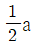
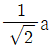
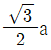
(정답률: 60%)
16. 나사의 일반도시에서 수나사의 바깥지름과 암나사의 안지름을 나타내는 선은?
- 가는 실선
- 굵은 실선
- 일점 쇄선
- 이점 쇄선
(정답률: 58%)
17. 다음 입체도법에 대한 설명으로 옳은 것은?
- 제 3각법은 물체를 제 3면각 안에 놓고 투상하는 방법으로 눈→물체→투상면의 순서로 놓는다.
- 제 1각법은 물체를 제 1각 안에 놓고 투상하는 방법으로 눈→투상면→물체의 순서로 놓는다.
- 전개도법에는 평행선법, 삼각형법, 방사선법을 이용한 전개도법의 세 가지가 있다.
- 한 도면에는 제 1각법과 제 3각법을 혼용하여 그려야 한다.
(정답률: 71%)
18. 화살표 방향이 정면도라면 평면도는?
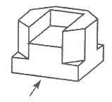
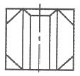
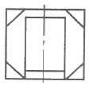
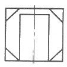
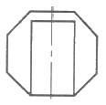
(정답률: 85%)
19. 다음 도면에서 (a)에 해당되는 길이는?
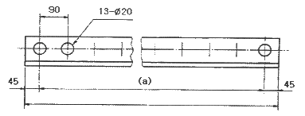
- 260mm
- 1080mm
- 1170mm
- 1260mm
(정답률: 47%)
20. 치수 □20 에 대한 설명으로 옳은 것은?
- 두께가 20mm인 평면
- 넓이가 20mm2인 정사각형
- 긴 변의 길이가 20mm인 직사각형
- 한 변의 길이가 20mm인 정사각형
(정답률: 78%)
2과목: 임의 구분
21. 가공에 의한 컷의 줄무늬 방향이 기호를 기입한 그림의 투영면에 비스듬하게 2방향으로 교차할 때 도시하는 기호는?
- X
- =
- M
- C
(정답률: 75%)
22. 다음 중 공차가 가장 큰 것은?
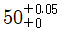
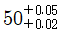
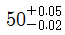
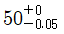
(정답률: 71%)
23. 다음의 축척 중 기계제도에서 쓰이지 않는 것은?
- 1/2
- 1/3
- 1/20
- 1/50
(정답률: 75%)
24. 그림은 어떤 단면도를 나타낸 것인가?
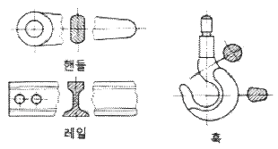
- 전단면도
- 부분 단면도
- 계단 단면도
- 회전 단면도
(정답률: 71%)
25. 주조품을 나타내는 재료의 기호로 옳은 것은?
- C
- P
- T
- F
(정답률: 67%)
26. 도면에서 표제란의 위치는?
- 오른쪽의 아래에 위치한다.
- 왼쪽의 아래에 위치한다.
- 오른쪽 위에 위치한다.
- 왼쪽 위에 위치한다.
(정답률: 80%)
27. 대상물의 보이지 않는 부분의 모양을 표시하는 데 사용하는 선의 종류는?
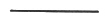
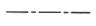
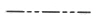
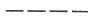
(정답률: 82%)
28. 내화물의 요구조건으로 틀린 것은?
- 고온에서 강도가 클 것
- 열팽창, 수축이 작을 것
- 연화점과 융해점이 높을 것
- 화학적으로 슬래그와 반응성이 좋을 것
(정답률: 75%)
29. 스피팅(spitting) 현상에 대한 설명으로 옳은 것은?
- 강재층의 두께가 충분할 때 생기는 현상
- 강욕에 대한 심한 충돌이 없을 때 생기는 현상
- 강재의 발포작용(foaming)이 충분할 때 생기는 현상
- 착화 후 광휘도가 낮은 화염이 노구로부터 나오며 미세한 철립이 비산할 때 생기는 현상
(정답률: 71%)
30. 주조방향에 따라 주편에 생기는 결함으로 주형 내 응고각(Shell) 두께의 불균일에 기인한 응력발생에 의한 것으로 2차 냉각과정으로 더욱 확대되는 결함은?
- 표면가로 크랙
- 방사상 크랙
- 표면세로 크랙
- 모서리 세로 크랙
(정답률: 61%)
31. LD 전로 제강 후 폐가스량을 측정한 결과 CO2가 1.50kg이었다면 CO2 부피는 약 몇 m3 정도인가? (단, 표준상태이다.)
- 0.76m3
- 1.50m3
- 2.00m3
- 3.28m3
(정답률: 54%)
32. 재해발생시 일반적인 업무처리 요령을 순서대로 나열한 것은?
- 재해발생→재해조사→긴급처리→대책수립→원인분석→평가
- 재해발생→긴급처리→재해조사→원인분석→대책수립→평가
- 재해발생→대책수립→재해조사→긴급처리→원인분석→평가
- 재해발생→원인분석→긴급처리→대책수립→재해조사→평가
(정답률: 80%)
33. 노외정련 설비 중 RH법에서 산소, 수소, 질소가 제거되는 장소가 아닌 것은?
- 상승관에 취입된 가스 표면
- 진공조 내에서 용강의 내부 중심부
- 취입가스와 함께 비산하는 스플래시 표면
- 상승관, 하강관, 진공조 내부의 내화물 표면
(정답률: 54%)
34. 주조 초기에 하부를 막아 용강이 새지 않도록 역할을 하는 것은?
- 핀치 롤
- 냉각대
- 더미바
- 인발설비
(정답률: 81%)
35. 산소 랜스 누수 발견시 안전사항으로 관계가 먼 것은?
- 노를 경동시킨다.
- 노전 통행자를 대피시킨다.
- 누수의 노내 유입을 최대한 억제한다.
- 슬래그 비산을 대비하여 장입측 도그 하우스를 완전히 개방(open)시킨다.
(정답률: 82%)
36. 용강의 탈산을 완전하게 하여 주입하므로 가스의 방출이 없이 조용하게 응고되는 강은?
- 캡드강
- 림드강
- 킬드강
- 세미킬드강
(정답률: 84%)
37. 우천시 고철에 수분이 있다고 판단되면 장입 후 출강측으로 느리게 1회만 경동시키는 이유는?
- 습기를 제거하여 폭발 방지를 위해
- 불순물의 혼입을 방지하기 위해
- 취련시간을 단축시키기 위해
- 양질의 강을 얻기 위해
(정답률: 83%)
38. 전로에서 하드 블로우(hard blow)의 설명으로 틀린 것은?
- 랜스로부터 산소의 유량이 많다.
- 탈탄반응을 촉진시키고 산화철의 생성량을 낮춘다.
- 랜스로부터 산소가스의 분사압력을 크게 한다.
- 랜스의 높이를 높이거나 산소압력을 낮추어 용강면에서의 산소 충돌에너지를 적게 한다.
(정답률: 68%)
39. 비열이 0.6kcal/kg·℃ 인 물질 100g을 25℃에서 225℃ 까지 높이는데 필요한 열량은?
- 10kcal
- 12kcal
- 14kcal
- 16kcal
(정답률: 70%)
40. 진공장치와 가열장치를 갖춘 방법으로 탈황, 성분조정, 온도 조정 등을 할 수 있는 특징이 있는 노외정련법은?
- LF법
- AOD법
- RH-OB법
- ASEA-SKF법
(정답률: 55%)
3과목: 임의 구분
41. 연속주조시 탕면상부에 투입되는 몰드파우더의 기능으로 틀린 것은?
- 윤활제의 역할
- 강의 청정도 상승
- 산화 및 환원의 촉진
- 용강의 공기 산화방지
(정답률: 61%)
42. 탈질을 촉진시키기 위한 방법이 아닌 것은?
- 강욕 끊음을 조장하는 방법
- 노구에서의 공기를 침입시키는 방법
- 용선 중 질소량을 하강시키는 방법
- 탈탄 반응을 강하게 하여 강욕을 강력 교반하는 방법
(정답률: 49%)
43. 연속주조 가스절단장치에 쓰이는 가스가 아닌 것은?
- 산소
- 프로판
- 아세틸렌
- 발생로가스
(정답률: 71%)
44. 전로제강의 진보된 기술로 상취(上吹)의 문제점을 보완한 복합취련에 대한 설명으로 틀린 것은?
- 일반적으로 전로 상부에는 산소, 하부에는 불활성 가스인 아르곤이나 질소가스를 불어 넣는다.
- 상취로 하는 것보다 용강의 교반력이 우수하며 온도와 성분이 균일해 주는 이점이 있다.
- 취련시간을 단축시킬 수 있으며 따라서 내화물 수명을 연장시킬 수 있다.
- 용강중의 [C]와 [O]의 반응정도가 상취에 비해 약해지므로 고탄소강 제조에 적합하다.
(정답률: 54%)
45. 단위시간에 투입되는 전력량을 증가시켜 장입물의 용해시간을 단축함으로써 생산성을 높이는 전기로 조업법은?
- HP법
- RP법
- UHP법
- URP법
(정답률: 76%)
46. RH 법에서 불활성가스인 Ar은 어느 곳에 취입하는가?
- 하강관
- 상승관
- 레이들 노즐
- 진공로 측벽
(정답률: 56%)
47. 전극재료가 갖추어야 할 조건을 설명한 것 중 틀린 것은?
- 강도가 높아야 한다.
- 전기전도도가 높아야 한다.
- 열팽창성이 높아야 한다.
- 고온에서의 내산화성이 우수해야 한다.
(정답률: 71%)
48. 진공탈가스법의 처리 효과가 아닌 것은?
- H, N, O 등의 가스성분을 증가시킨다.
- 비금속개재물을 저감시킨다.
- 유해원소를 증발시켜 제거한다.
- 온도 및 성분을 균일화한다.
(정답률: 88%)
49. LD 전로 조업에서 탈탄 속도가 점차 감소하는 시기에서의 산소 취입 방법은?
- 산소 취입 중지
- 산소제트 압력을 점차 감소
- 산소제트 압력을 점차 증가
- 산소제트 압력을 최대로
(정답률: 56%)
50. 전로 내에서 산소와 반응하여 가장 먼저 제거되는 것은?
- C
- P
- Si
- Mn
(정답률: 43%)
51. 혼선로의 역할 중 틀린 것은?
- 용선의 승온
- 용선의 저장
- 용선의 보온
- 용선의 균질화
(정답률: 66%)
52. 탈산에 이용하는 원소를 산소와의 친화력이 강한 순서로 옳은 것은?
- Al → Ti → Si → V → Cr
- Cr → V → Si → Ti → Al
- Ti → V → Si → Cr → Al
- Si → Ti → Cr → V → Al
(정답률: 65%)
53. 전로설비에서 출강구의 형상을 경사형과 원통형으로 나눌 때 경사형 출강구에 대한 설명으로 틀린 것은?
- 원통형에 비해 슬래그의 유입이 많다.
- 원통형에 비해 출강류 퍼짐방지로 산화가 적다.
- 원통형에 비해 출강구 마모는 사용수명이 길다.
- 원통형에 비해 출강구 사용초기와 말기의 출강 시간 편차가 적다.
(정답률: 22%)
54. 상취 산소 전로 제강법의 특징이 아닌 것은?
- P, S의 함량이 낮은 강을 얻을 수 있다.
- 제강능률이 평로법에 비해 6~8배 높은 제강법이다.
- 고철 사용량이 많아 Ni, Cr, Mo 등의 tramp element 가 많다.
- 강종의 범위도 극저탄소강으로부터 고탄소강 제조가 가능하다.
(정답률: 49%)
55. 산화정련을 마친 용강을 제조할 때, 즉 응고시 탈산제로 사용하는 것이 아닌 것은?
- Fe-Mn
- Fe-Si
- Sn
- Al
(정답률: 53%)
56. LD전로에서 제강작업 중 사요하는 랜스(Lance)의 용도로 옳게 설명한 것은?
- 정련을 위해 산소를 용탕 중에 불어 넣기 위한 랜스를 서브 랜스(Sub Lance)라 한다.
- 노 용량이 대형화함에 따라 정련효과를 증대시키기 위해 단공노즐을 사용한다.
- 용강 내 탈인(P)을 촉진시키기 위한 특수 랜스로 LD-AC Lance를 사용한다.
- 용선 배합율을 증대시키기 위한 방법으로 산소와 연료를 동시에 불어 넣기 위해 옥시퓨얼랜스(Oxyfuel Lance)를 사용한다.
(정답률: 43%)
57. 레이들 바닥의 다공질 내화물을 통해 캐리어 가스(N2)를 취입하여 탈황 반응을 촉진시키는 탈황법은?
- KR법
- 인젝션법
- 레이들 탈황법
- 포러스 플러그법
(정답률: 40%)
58. 전기로에 환원철을 사용하였을 때의 설명으로 틀린 것은?
- 제강시간이 단축된다.
- 철분의 회수가 용이하다.
- 다량의 산화칼슘이 필요하다.
- 전기로의 자동조작이 쉽다.
(정답률: 20%)
59. 연속 주조 설비 중 용강을 받아 스트랜드 주형에 공급하는 것은?
- 레이들
- 턴디시
- 더미 바
- 가이드 롤
(정답률: 77%)
60. 다음 중 탄소강에서 편석을 가장 심하게 일으키는 원소는?
- P
- Si
- Cr
- Al
(정답률: 68%)